tius
code artist
about
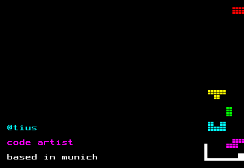
tius grew up with punch tape readers, large floppy disk drives, and soldering irons. For over four decades, he and his companies have developed and operated highly available systems for the media industry.
In collaboration with artists, he develops creative, customised technical solutions to enable new forms of expression.
In his artistic work, tius confronts elementary philosophical and social questions: the nature of reality, perception, transience, and human identity. He consciously employs the limitations of historical systems as an artistic medium.
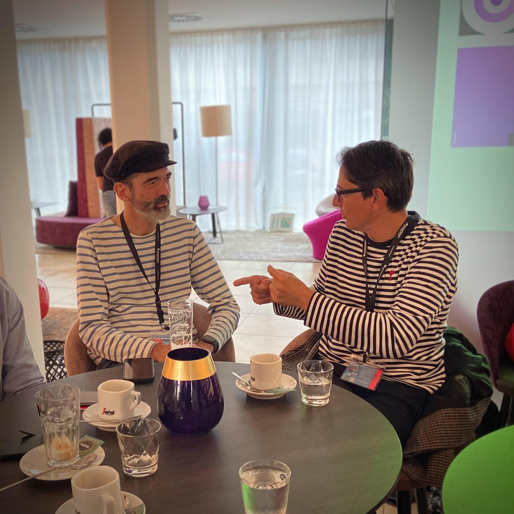
tius and Mario Klingemann at Ars Electronica 2022
recent teletext works
teletext 3000 / summer of teletext (ard/orf/yle)
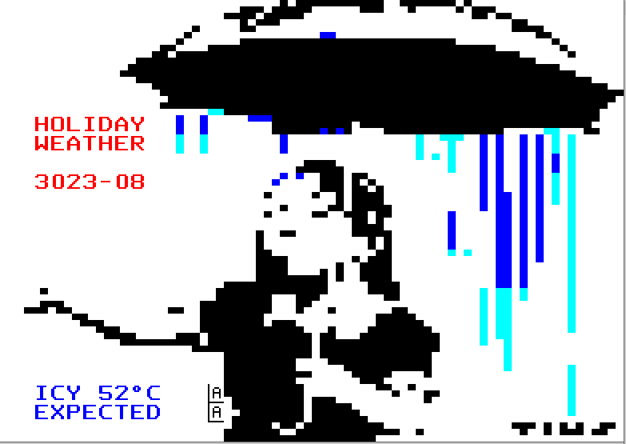
icy holidays
tius 2023
teletext art collection on yle text
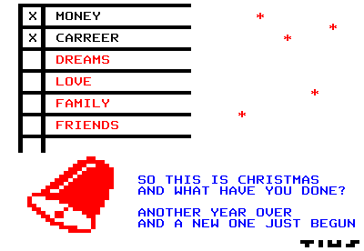
so this is christmas
tius 2022
.#NFTLondon2022
Contribution to the art exhibition in honour of @money_alotta.
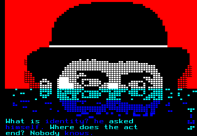
Alotta Money
lenticular printing with five frames
tius 2022
“teletext is art”
ORF TELETEXT (from page 560) ARD Text (from page 830) and during Ars Electronica 2022 (07.09.-11.09.2022, Ars Electronica Center/Deep Space, Linz, Austria).
“Teletext is Art” is a multimodal exhibition experience dedicated to 7 bit teletext art. The artworks are presented on air in ORF TELETEXT and ARD text, online at the Museum of Teletext Art, on chain as NFTs on the Tezos blockchain, and in real life at the Ars Electronica Festival 2022.
The digital artworks are by the 15 international artists presented by TeleNFT, which, for the first time brought cryptoart into the teletext and teletext art onto the blockchain. The works question technological progress in times of crises …”.
Curated by Max Haarich and Gleb Divov
Partricipating artists: Bloom Jr. (GER), Buzzlightning (GER), Gleb Divov (RUS/LIT), Christoph Faulhaber (GER), Max Haarich (GER), Juha van Ingen (FIN), Claudie Linke (GER), Kleintonno (GER), Nissla (AUT), Numo (GER), Quasimondo (GER), Jarkko Räsänen (FIN), Mamadou Sow (GER), sp4ce (GER) and tius (GER).
Read more: Teletext is Art
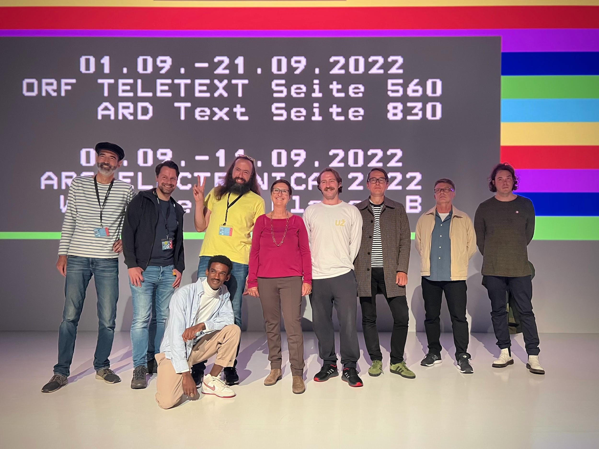
Tius with the members of TeleNFT, Ars Electronica Centre 2022
fragile existences
The works for the exhibition "Teletext is Art" once again address fundamental questions of human existence. For this purpose, film quotes of artificial intelligences were placed in a new context.
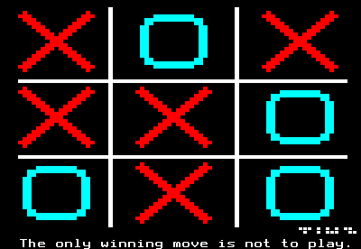
wargames
tius 2022
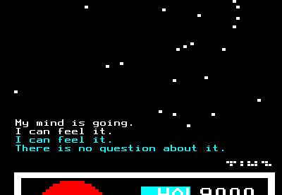
my mind is going
tius 2022
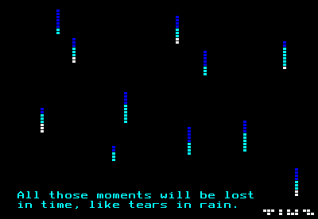
tears in the rain
tius 2022
teletext art workshop at 1e9 conference 2022
How to Kunst im Teletext?
Workshop for digital artists by Max Haarich and Tius
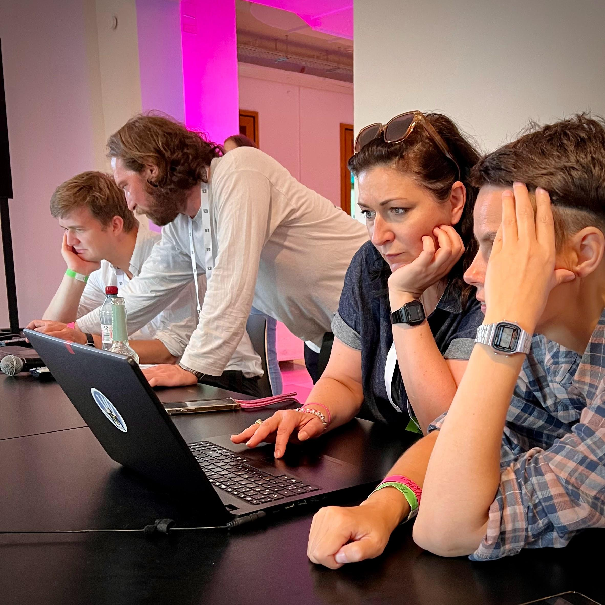 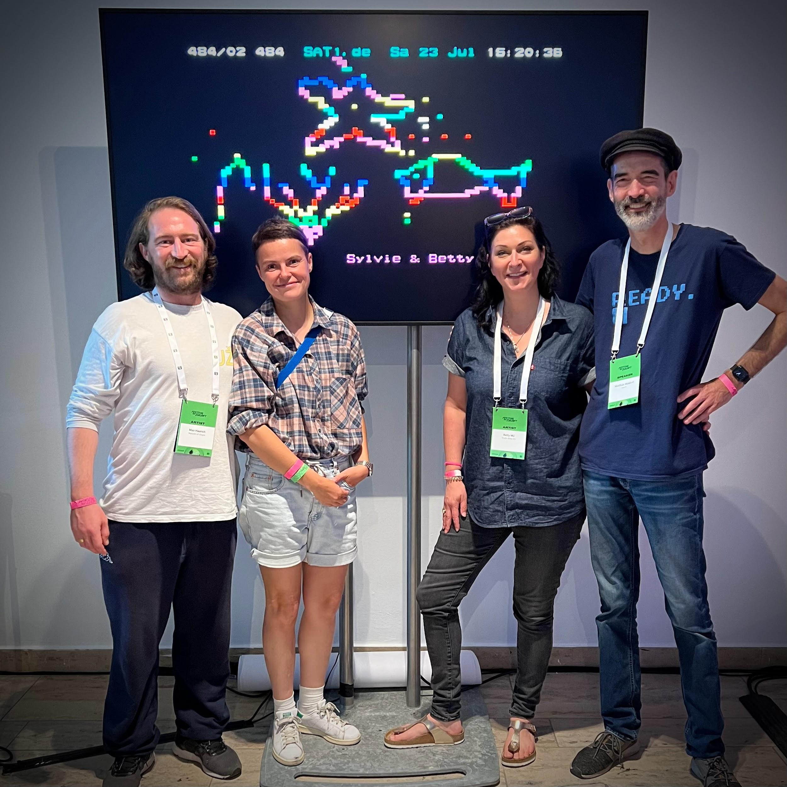
(with Max Haarich and Betty Mü)
7 bit movement
“7bit movements” is an artistic investigation into the boundaries of visual perception.
13 international artists created short 7bit GIF animations to challenge our perception of movement. What does it take to have the impression of a movement? How do we identify a moving object, its direction, its orientation, its speed?
The rough and glitchy 7bit teletext aesthetics serve as a boundary and facilitator at the same time: they sometimes cover and sometimes highlight certain details to create novel experiences of visual perception and delusion.
The contributing artists are Bloom Jr., Gleb Divov , Gnothi Kollektiv, Max Haarich, Michael Käsdorf, die Köpfe, Tatjana Lee, muzsa, Pierro, Sebastian Quast, Rabanheidr, Jürg Kobel, and tius.
All artworks were created using custom based software build by tius.
Link to the collection: https://lnkd.in/ej_uKk5F
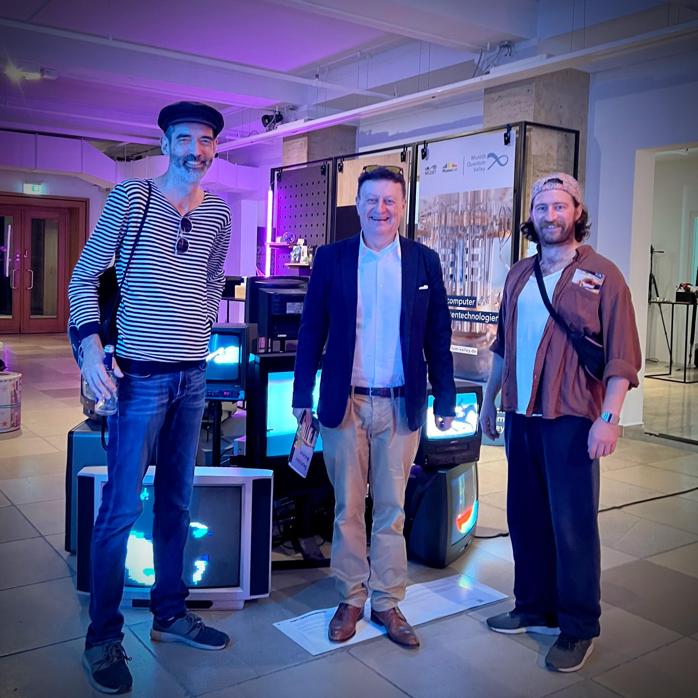
7 bit movement, Deutsches Museum Forum der Zukunft 2022
(with Wolfgang Heckl and Max Haarich)
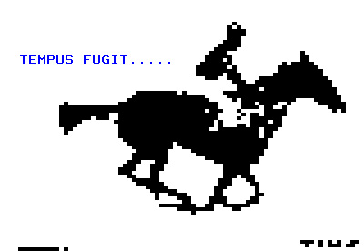
Tempus fugit
tius 2022
The artwork is based on Eadweard Muybridge's iconic running horse image sequence, often considered one of the earliest films of all time. The sequence is further reduced to the display possibilities of teletext and becomes a vanitas motif in its endless repetition.
Dedicated to the amazing @horsenburger.
teletext art contest
block party 2022
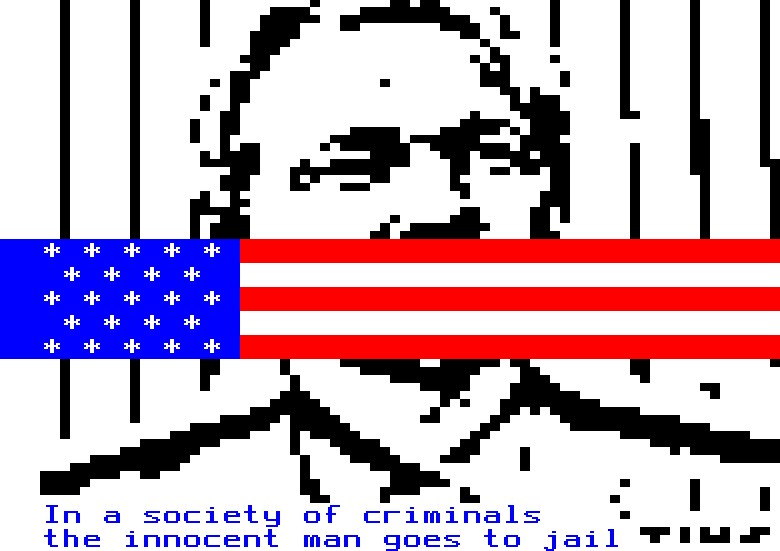
innocent man
tius 2022
A quote from Philip K. Dick for the #teletextblockparty 2022 #teletext art competition.
valentine’s day pixel festival 2022
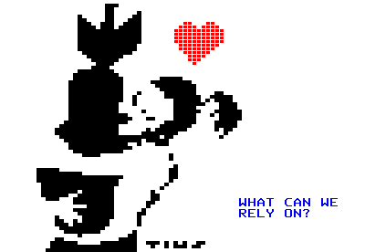
true love
tius 2022
Contribution for the Valentine’s Day exhibition on Yle Text.
telenft
The medium is the massage. Fully on-chain teletext art stored on Arweave and broadcasted on SAT.1 Teletext. Included in the permanent collection of Museum Francisco Carolinum (AT) and Museum of Teletext Art (FI).
The TeleNFT exhibition questions technological progress amid economic and environmental crises. The core inquiry: How much time is left? Is technology the salvation, or is art the threat? Immortalised on the blockchain, these works document our zeitgeist—at times ironically resigned, at others uninhibitedly euphoric—yet united in one conviction: now it is up to us.
Max Haarich & Gleb Divov, TeleNFT.art
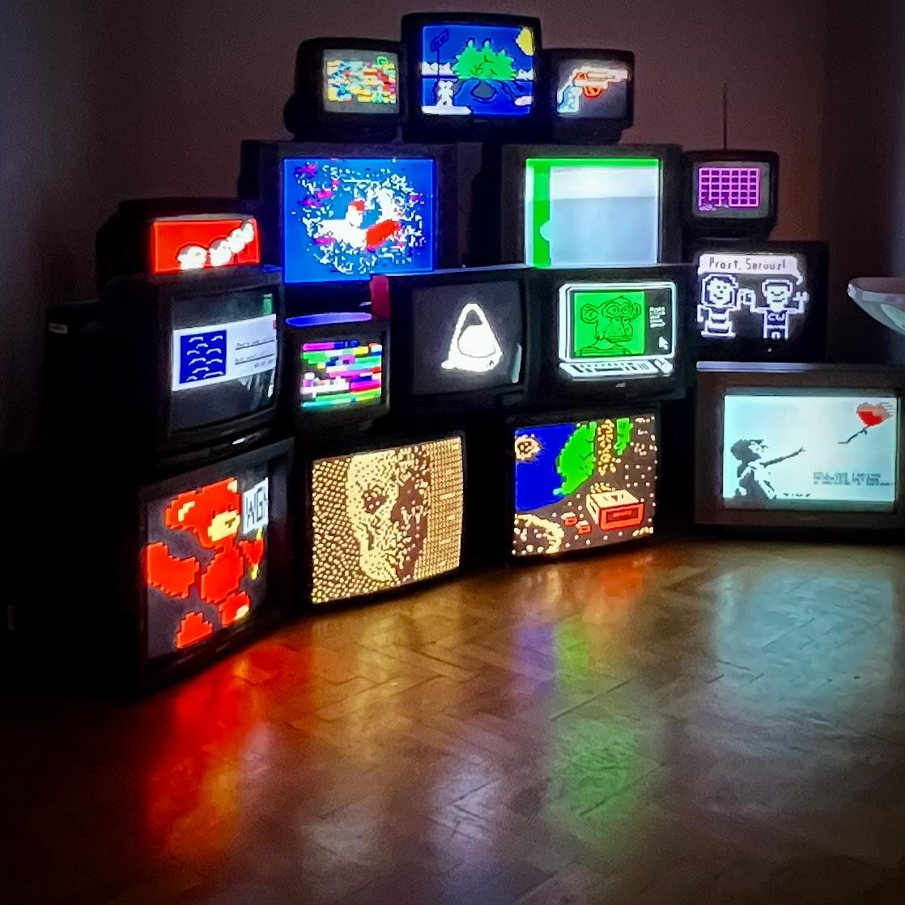
Artworks of TeleNFT at FC Francisco Carolinum Linz
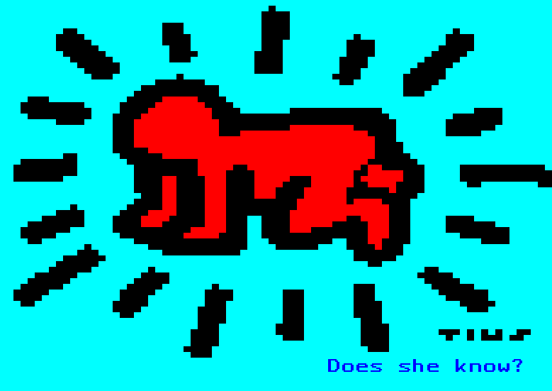
Does she know?
tius 2021
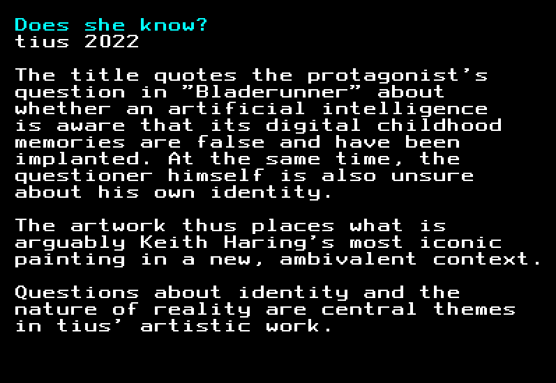
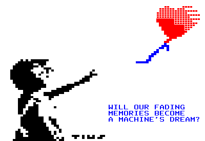
Everything in life is just for a while
tius 2021 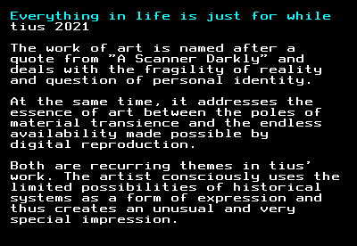